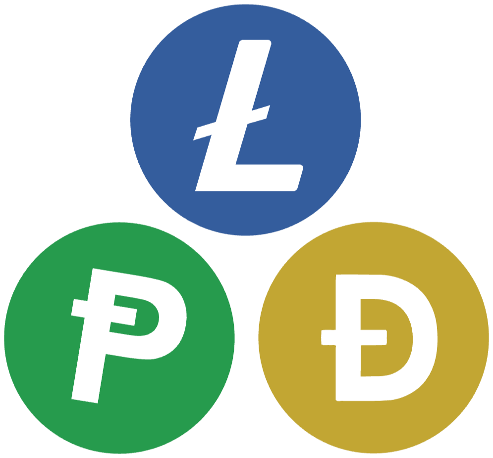

什么是 Pepecoin？
Pepecoin（PEP）是运行在自有区块链上的开放式工作量证明币——一个属于 Pepe 的点对点网络，没有预挖，也没有单一运营方。节点遵循一套任何人都可以运行的公开规则。
社区事实资料页 · 更新于 2026年10月7日
Pepecoin（PEP）是运行在自有区块链上的工作量证明币，与 Litecoin（莱特币）和 Dogecoin（狗狗币）一同挖矿。本站各页面汇集相关数据，并注明每项数据的来源。
与大多数加密货币网站不同，这里不做推销。每个数字都附有来源链接，你可以自己核实。加密世界需要更多这样的诚实。
Pepecoin（PEP）是运行在自有区块链上的开放式工作量证明币——一个属于 Pepe 的点对点网络，没有预挖，也没有单一运营方。节点遵循一套任何人都可以运行的公开规则。

通过合并挖矿（AuxPoW），Litecoin、Dogecoin 和 Pepecoin 可以基于同一份 Scrypt 工作量一同挖矿。
PEPE、PEPECOIN 和 PEP 是三种不同的资产。提供并排对比表和五秒地址核对方法。
前 10、100 和 1,000 个地址持有多少供应量，以及其变化情况。每天一份新快照。
规则相同，相隔十年。算力、供应量，以及两种币在相同币龄时的价格对比。
没有供应上限，每年新增币量相同，通胀率持续下降。图表展示未来 25 年。
按 Dogecoin（狗狗币）、Bitcoin（比特币）或前 100 名任一币种今天或 ATH 时的市值，计算你所持 PEP 的价值，价格实时更新。
Litecoin、Dogecoin 和 Pepecoin 如何走到共用同一台矿机：从 Charlie Lee 2014年的提议到今天。
区块高度、供应量、持有 PEP 的地址数和实际平均出块时间，图表始于 2024年2月。
按 pepecoin.com 在 2026年10月6日的列表整理，另加官方 Pepecoin Shop。链接直接指向各服务，不含邀请码。列于此处并不代表推荐。分步说明：如何购买 PEP 和该用哪种钱包。CoinEx 已不在列表中：该交易所已于 2026年9月29日停止现货交易，提币将于 2026年12月22日截止（BeInCrypto）。